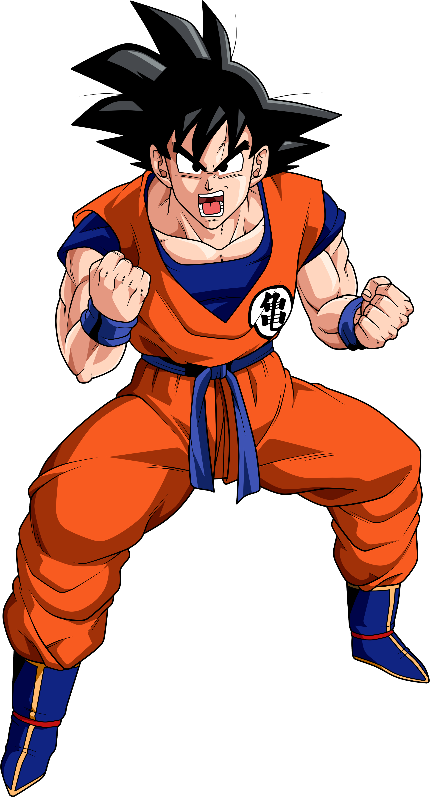
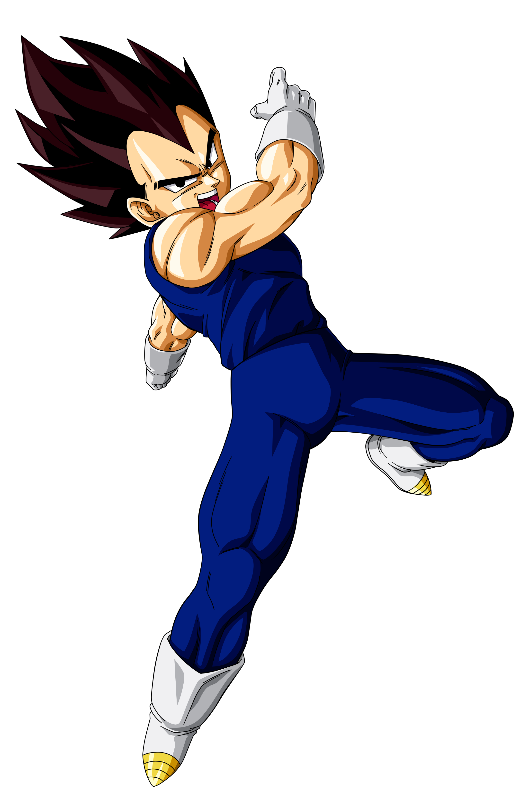
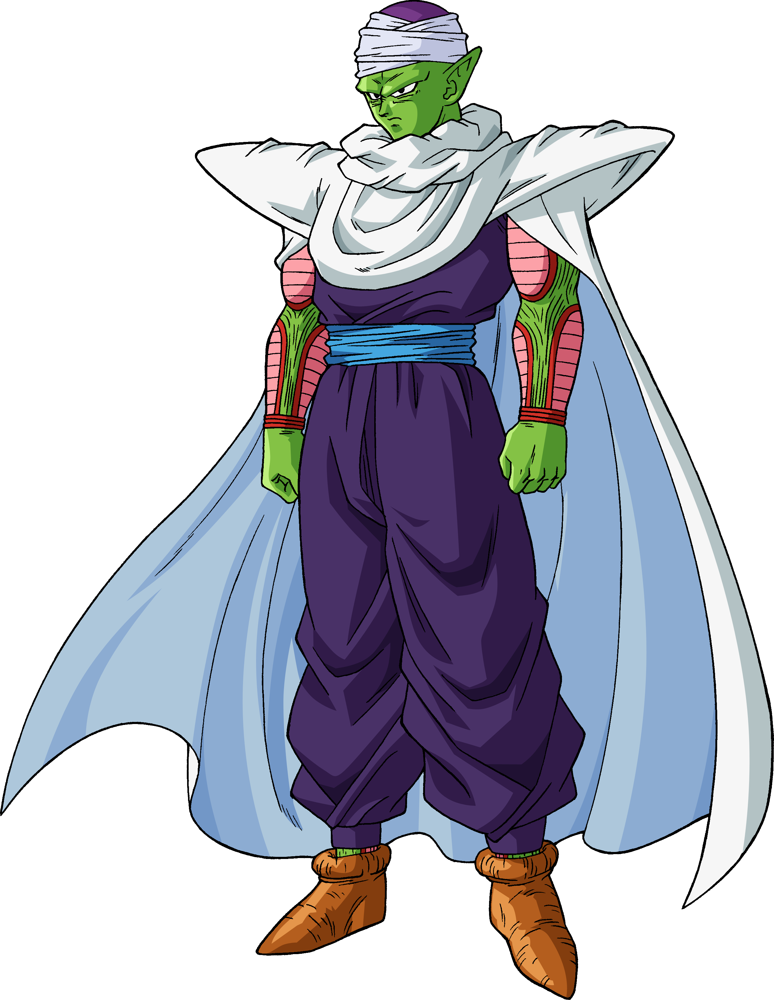
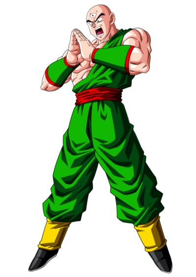
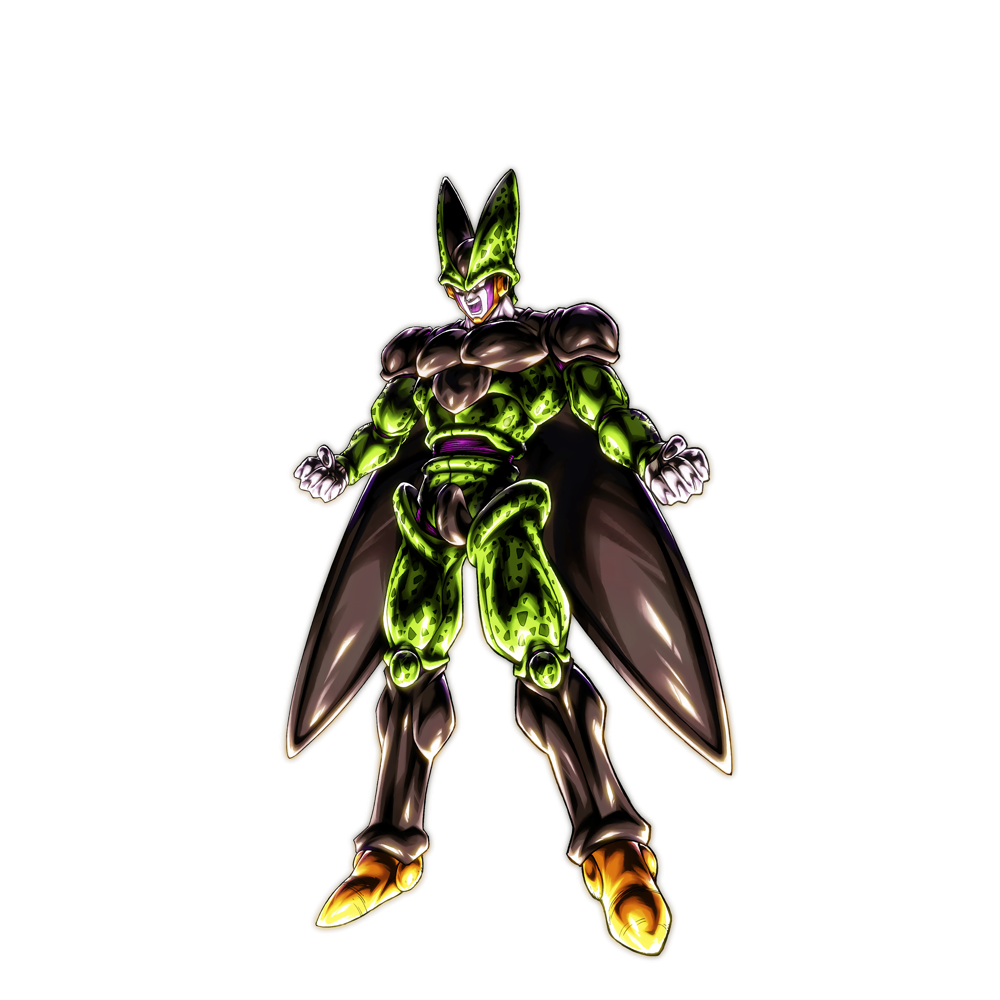
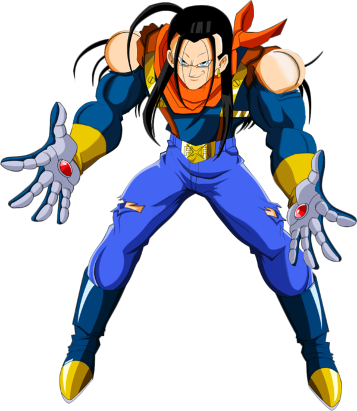
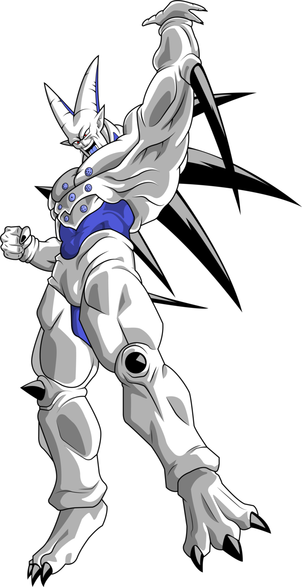
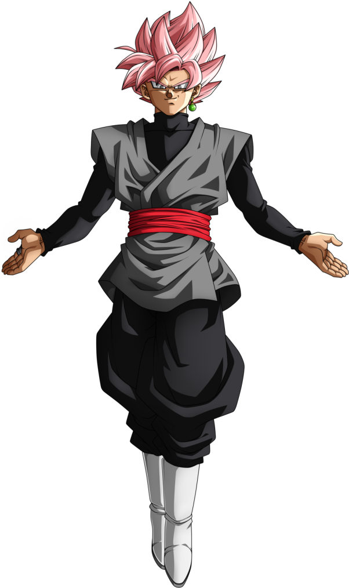
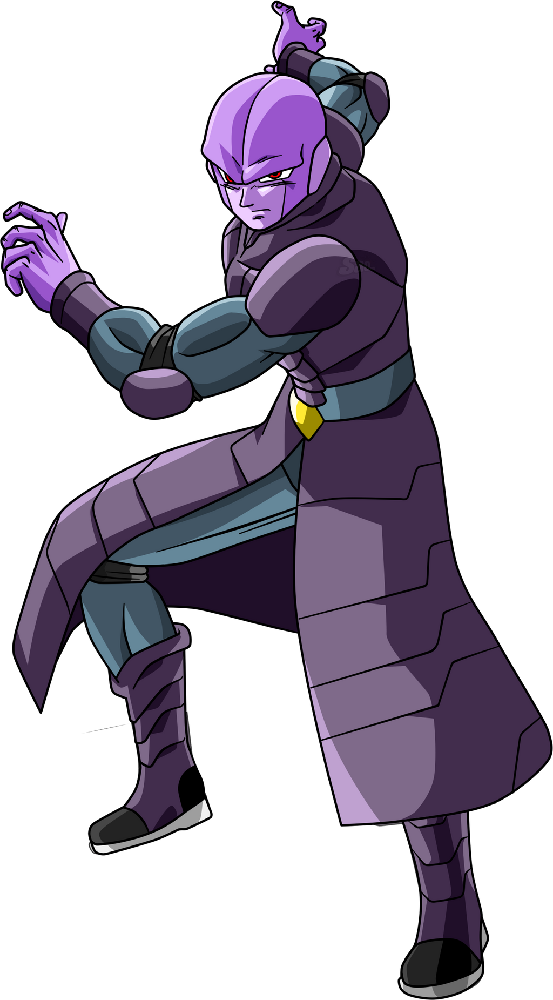

Los Guerreros Z
Goku
El protagonista de la historia, un Saiyajin criado en la Tierra que busca constantemente superar sus propios límites a través de las artes marciales y la protección de su hogar adoptivo.
- Super Saiyajin (Fases 1, 2 y 3): Las transformaciones clásicas que multiplican su poder dorado.
- Super Saiyajin Dios / Blue: Los estados divinos que alcanzan el ki de los dioses.
- Ultra Instinto (Señal y Dominado): El estado técnico definitivo donde su cuerpo reacciona de forma autónoma.

Vegeta
El orgulloso Príncipe de los Saiyajin. Al principio un enemigo despiadado, con el tiempo se convierte en el mayor rival y aliado de Goku, luchando por proteger a su familia.
- Super Saiyajin / Super Vegeta: Logrado a través de la pura frustración y el entrenamiento duro.
- Majin Vegeta: Estado donde despierta su maldad interior gracias a la magia de Babidi.
- Super Saiyajin Blue Evolution / Ultra Ego: Sus máximos niveles de poder divinos basados en el orgullo y la destrucción.

Piccolo
La reencarnación del Rey Demonio Piccolo Daimaku, quien comenzó como un villano obsesionado con matar a Goku, pero se convirtió en el sabio mentor de Gohan y un protector clave de la Tierra.
- Fusión Namekiana (con Nail y Kami-sama): Uniones místicas que incrementaron drásticamente su poder básico.
- Piccolo Naranja (Orange Piccolo): Su transformación más poderosa, desbloqueada gracias a las Esferas del Dragón.

Krillin
El mejor amigo de Goku desde la infancia. A pesar de ser un humano común en un mundo de guerreros divinos, destaca por su valentía, ingenio táctico y técnicas icónicas como el Kienzan.
- Poder Despertado (Gran Patriarca): Desbloqueo de su potencial oculto en Namekusei.
- Estado de No Ego (Selfless State): Control mental total sobre su miedo y su energía espiritual.

Gohan
El hijo primogénito de Goku. Posee un potencial híbrido (humano-saiyajin) latente que supera al de los puros, aunque prefiere la vida pacífica del estudio a menos que sus seres queridos corran peligro.
- Super Saiyajin 2: Desbloqueado en la batalla contra Cell debido a la furia extrema.
- Estado Definitivo (Gohan Místico): Potencial desbloqueado al máximo por el Anciano Kaioshin sin necesidad de transformarse en SSJ.
- Gohan Bestia (Gohan Beast): Su forma más reciente y destructiva, nacida de una furia sin precedentes.

Ten Shin Han
Un formidable artista marcial de la escuela Grulla que dejó atrás el camino del mal tras conocer al Maestro Roshi. Posee un tercer ojo y una disciplina inquebrantable.
- Nota: No posee transformaciones físicas, pero domina técnicas de alteración corporal como el Shishin no Ken (división en 4 cuerpos) y el Kikoho.

Yamcha
Un exbandido del desierto que se convirtió en uno de los primeros aliados de Goku. Aunque con el tiempo quedó rezagado en poder, sigue siendo un hábil atleta y peleador.
- Nota: No posee transformaciones. Su técnica definitiva es el Sokidan (esfera de energía controlable).

Villanos
Red Ribbon (Patrulla Roja)
Una organización militar paramilitar que busca dominar el mundo mediante las Esferas del Dragón y, más tarde, una megacorporación científica obsesionada con destruir a Goku a través de los androides.
- Evolución Tecnológica: Desde ejércitos convencionales hasta la creación de los Androides (16, 17, 18, 19, 20), Cell y los Gamma.

Piccolo Daimaku
La mitad malvada creada cuando el Namekiano que se convertiría en Kami-sama expulsó la oscuridad de su corazón. Un verdadero rey demonio que sembró el caos en la Tierra.
- Forma Joven: Recuperó su juventud y su máximo poder destructivo pidiendo un deseo a Shenlong.

Cell
La bio-criatura definitiva creada por la computadora del Dr. Gero a partir de las células de los guerreros más fuertes del universo.
- Forma Semi-Perfecta / Perfecta: Alcanzadas tras absorber a los Androides 17 y 18 respectivamente.
- Cell Super Perfecto: Regreso definitivo con un poder eléctrico similar al Super Saiyajin 2 tras su autodestrucción.

Majin Buu
Una entidad mágica ancestral de pura destrucción, revivida por el mago Babidi, caracterizada por su cuerpo elástico y su caótica personalidad.
- Formas de Absorción (Gotenks, Piccolo, Gohan): Mutaciones estéticas y de poder al absorber a los Guerreros Z.
- Kid Boo: La forma original, primitiva e incontrolable del monstruo.

Baby
Un parásito alienígena creado a partir del ADN del Rey de los Tsufuru, diseñado para vengarse de los Saiyajin infectando y controlando los cuerpos de sus enemigos en Dragon Ball GT.
- Baby Vegeta (y forma Ozaru Dorado): Su fase más peligrosa tras poseer por completo el cuerpo de Vegeta.

Super 17
El androide definitivo definitivo surgido en el infierno en Dragon Ball GT a través de la fusión del Andoride 17 original y un nuevo clon mutante.
- Modo Absorción: Capacidad de absorber cualquier ataque de energía para aumentar infinitamente su poder.

Omega Shenron
El más poderoso y definitivo de los Dragones Oscuros en Dragon Ball GT, nacido de la energía negativa acumulada por el uso excesivo de las Esferas del Dragón.
- Forma Absoluta: Lograda tras absorber las otras seis esferas corruptas en su propio cuerpo.

Jiren
El guerrero mortal más fuerte del Universo 11 y miembro de las Tropas del Orgullo. Un coloso cuya fuerza bruta supera incluso a la de los Dioses de la Destrucción de su universo.
- Poder Máximo (Full Power): Estado donde libera su ardiente ki oculto tras romper sus propios límites emocionales.

Goku Black
Zamasu, un aprendiz de Kaioshin del Universo 10, que utilizó las Súper Esferas del Dragón para robar el cuerpo de Goku en una línea temporal alternativa y erradicar a los mortales.
- Super Saiyajin Rosé: La versión divina y corrupta del Super Saiyajin Blue adaptada a su alma de dios.

Hit
El legendario y milenario asesino legendario del Universo 6. Un luchador infalible que destaca por su frialdad y técnicas de manipulación temporal.
- Salto Temporal (Tokitoba): Habilidad para congelar el tiempo por fracciones de segundo, la cual evoluciona durante el combate.
